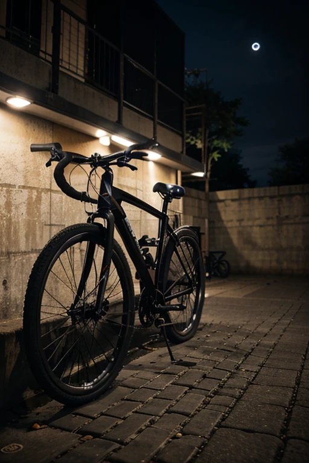

O perseguidor é um homem que foi assaltado enquanto andava de bicicleta, ele teve sua bike roubada e conseguiu fugir do bandido, e então almeja encontrar sua bike e ter sua vingança.
Ao andar pela Goya você pode encontrar uma bicicleta no chão, aparentemente sem dono, caso você pegue a bike, existem chances de você invocar o perseguidor, se isso acontecer fuja o mais rápido possivel, ele irá te perseguir por longas distâncias enquanto grita: A MINHA BIKE! A MINHA BIKE! caso ele te pegue, você não terá um bom final...